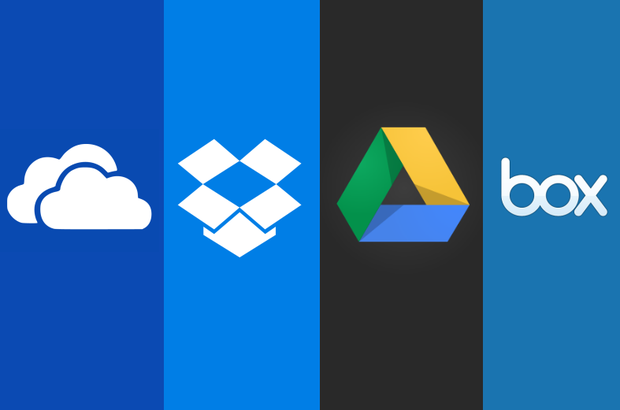
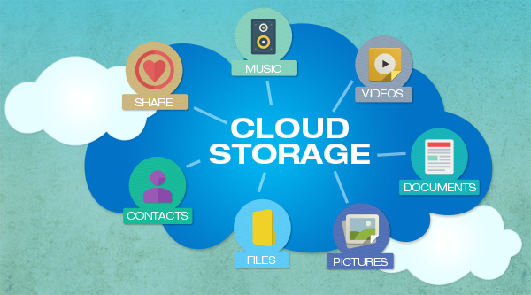

Archiving
Archiving services provided to the user files them save their files at a remote location, called the cloud, and use it whenever and wherever they want, without having to physically carry the storage device. This is of a great use to people who have to access files which occupy a huge space and have to travel with them and for many others too.


These services are so popular even though people can copy their files onto a flash drive or external hard disk, and physically carry them everywhere because they are very convenient to their users.
Users can also share their files with their friends via the cloud, using the internet. Few such services available at the time of writing this e-book are
Google Drive, One-drive, Apple iCloud, Dropbox and box
 (place cursor to zoom or click to open image)
(place cursor to zoom or click to open image)
Even though the user gets to access the cloud as per their wish, only a certain amount of data can be stored on the cloud. Anything more than the limit, the user is asked to pay a sum of money every month, like the example shown above and sometimes it may be expensive.
Though they are all marketed to be very secure, cloud servers are always under the risk of getting hacked. It may not be very simply to hack but it is possible. One such incident took place on August 31 in 2014 where many private photos of various celebrities were leaked online. It happened because the cloud server was hacked.
Apart from this, users may not be able to access these services when the site or server is under maintenance.